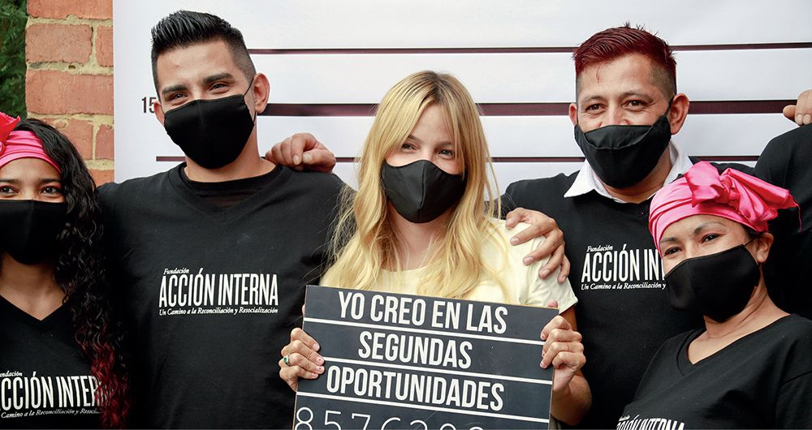

Biografia

Johana Bahamón nació en Cali, Valle del Cauca, el 27 de julio de 1982. Es hija de María Mercedes Gómez y Héctor Bahamón. Tiene 2 hijos propios llamados Simón Cabas (de su primer matrimonio con el cantante Cabas) y Mia Salazar (de su actual matrimonio con el inversionista de bolsa Juan Manuel Salazar) y una hija adoptiva llamada Evelyn, de la cual funge como acudiente debido a que es hija de una exprisionera llamada Clary, que estuvo recluida en la cárcel de Santa Rosa de Viterbo. Bahamón es profesional en Administración de Empresas del Colegio de Estudios Superiores de Administración (CESA). En el 2000 inició su trayectoria como actriz y después complementó su formación con cursos y talleres de actuación en Bogotá y en la Escuela de Cine de Nueva York. En 2004 debutó en la televisión en la telenovela del Canal RCN La viuda de la mafia.
Fundación Acción Interna

En septiembre de 2012 Johana Bahamón fue invitada como parte del jurado de un reinado de belleza dentro de la Cárcel El Buen Pastor en Bogotá, donde pudo conocer la historia de algunas mujeres que pagan sus penas en dicho lugar. Entonces decidió crear la Fundación Teatro Interno —ahora Acción Interna—, para lograr nuevas oportunidades para una población carcelaria, a través de la cultura y el emprendimiento. En 2020 la Fundación Acción Interna contaba varios proyectos de reinserción y resocialización de la población carcelaria a través de distintas líneas entre las que se destacan el Restaurante Interno (que estaba ubicado en Cartagena) y la Agencia Interna. Según Pacto global, con sus proyectos productivos sociales y su metodología, la Fundación Acción Interna ha tenido incidencia en “la política pública que impacta a todas las personas privadas de la libertad, pospenados, y su proceso de resocialización, restaurativo y de reinserción”.
Te gustaria saber mas sobre
Reconocimientos
Distinciones y reconocimientos de Bahamón como activista:
- Young Global Leader ( Foro Económico Mundial).
- Ten Outstanding Young Person of the World (patrocinado por la Cámara Junior Internacional).
- Premio nacional Mujer Cafam.
- Miembro Honorario Colegio de Abogados Penalistas de Colombia.
- Condecoración “Premio Internacional de la Mujer” creado por el Foro Internacional de Liderazgo, Cámara Nacional de la Mujer de México y Organización Mundial de Líderes.
- Premio “Líder Incluyente” otorgado por la Fundación ANDI y USAID.
- Fue nombrada embajadora de Reconciliación por la Organización de Estados Iberoamericanos para la Educación, la Ciencia y la Cultura.
- Ganadora del premio Emprendedor Social del año EY (Ernst & Young)
2020
2019
2017
Películas y programas de TV